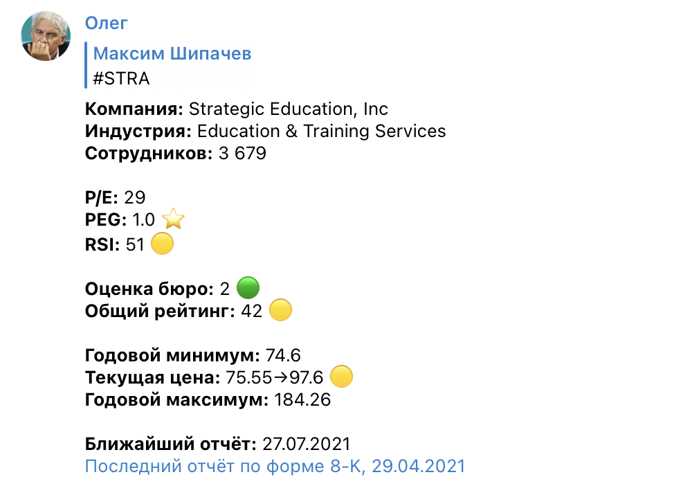
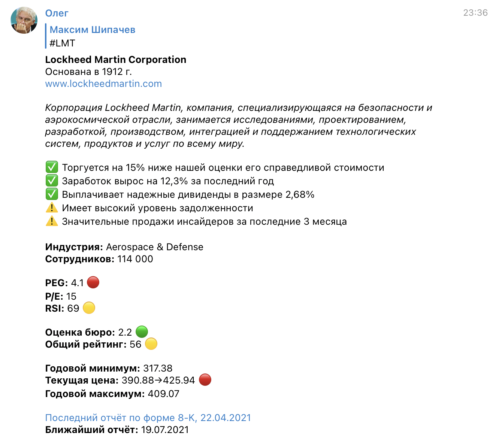
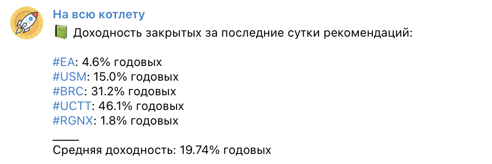

На фондовый рынок я пришёл примерно год назад. До фондового рынка я успел подержаться за кое-что: разные кредиты, майнинг, ставки на спорт, форекс. Но делал это не ради наживы, а из-за любопытства, понимая и принимая возможные потери. В итоге эволюционировал до фондового рынка.
Бот «На всю котлету»
Мартовское падение к моему появлению на рынке уже было отыграно, это и к лучшему. Ложных надежд я не получил. Встала задача выбора акций. Как сориентироваться в этом океане, вокруг столько всего вкусного…
Пошёл проторенной скользкой дорожкой — читать рекомендации на разных порталах, телеграм-каналах, сайтах. Рекомендаций много, одна краше другой, глаза разбегаются, рука тянется к кошельку, всё как у людей.
Так как по жизни люблю автоматизировать и систематизировать, решил написать бота, который будет собирать информацию по тикеру в нескольких источниках и сводить в нужный мне формат.
Так родился бот «Олег».
Привет, Олег
Олегу можно было отправить тикер, он дёргал разные API отвечал сообщением из которого можно было сделать некоторые выводы.
Первый Олег показывал коэффициенты P/E, PEG, RSI, рейтинг рекомендаций и средний прогноз цены. Годовые экстремумы цены, дату будущего отчёта и ссылку на последний финансовый отчёт.

Сообщения бота были украшены эмодзи, чтобы соответствовать духу времени.
Бота хотелось тестировать не только на себе. В то же время бот использовал бесплатные лимиты API и совсем отправлять его в свободное плавание не хотелось, чтобы не превышать их. Поэтому я создал чат, в котором можно было пользоваться ботом. В чат пригласил несколько человек из своего фейсбука.
Я почувствовал вкус к Олегу и начал обвешивать его сообщения дополнительной информацией.

В качестве источника информации о преимуществах и рисках я использую англоязычный ресурс. Чтобы информацию было легче читать, Олег переводит её на русский. Кроме этого добавилась информация о компании: год её основания, количество сотрудников, отрасль.
Олег заводит канал
Но хотелось ещё больше автоматизации. Неплохо было бы, чтобы Олег искал рекомендации за меня, а мне оставалось только читать его сообщения и наблюдать за ростом депозита, лениво выбирая недвижимость за рубежом и прочие товары для богачей.
Так Олег перестал отвечать на запросы пользователей и завёл свой канал.
Как работает бот сегодня:
🚀 Каждый день анализирует почти 2000 акций, которые торгуются на Санкт-Петербургской бирже.
🚀 Собирает информацию об этих акциях в 9 разных источниках, часть информации переводит на русский язык.
🚀 Среди этих акций ищет те, которые аналитики рекомендуют к покупке.
🚀 Среди отобранных ищет те, которые удовлетворяют ряду условий.
- Разница между текущей ценой и средней прогнозной > 20%. Прогнозная проверяется в 2 независимых источниках. Разница должна быть в обоих.
- Рейтинг рекомендаций аналитиков < 2.1, где 1 — настоятельно покупать, 5 — продавать
- Коэффициент PEG < 3
- Коэффициент D/E < 2
- Коэффициент P/E < 30
- RSI < 40
- Количество сотрудников > 1000
- Акция доступна на Санкт-Петербургской бирже и в Тиньков.Инвестициях
🚀 Если находит акцию, которая удовлетворяет условиям, публикует её в канал и начинает отслеживать движение цены по ней. Если условия перестают выполняться, Олег пишет об отмене рекомендации.
Чтобы поменьше доверять аналитикам, Олег снабжает каждую рекомендацию дополнительной информацией. Эти данные не вляют на факт рекомендации, но могут помочь сделать правильный выбор.
- финансовые коэффициенты ROA и P/S
- информация об отрасли, капитализации, годе основания
- Beta акции
Тикеры, которые входят в S&P 500, Олег отмечает отдельно. Некоторые считают это за достоинство.
Незадолго до основной сессии Олег присылает список текущих рекомендаций с указанием средней доходности.
Утром Олег присылает список закрытых за минувшие сутки рекомендаций с указанием средней годовой доходности.

Кроме этого бот дважды в день публикует в канал индекс Fear&Greed и незадолго до основной сессии пост со списком всех текущих рекомендаций (их насчитывается от 75 до 100). Ещё иногда публикует карикатуру.